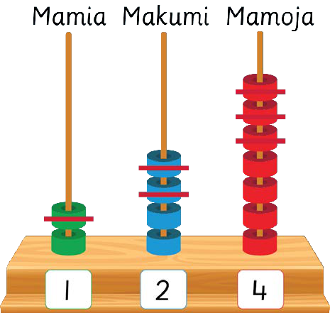

Hatua ya pili. Toa makumi: 4 kutoa 2 ni 2. Andika 2 kwenye nafasi ya makumi.
Jedwali la hatua ya pili. 247 kutoa 123. Matokeo ni mamia dashi, makumi 2, mamoja 4.
Hatua ya tatu. Toa mamia: 2 kutoa 1 ni 1. Andika 1 kwenye nafasi ya mamia.
Jedwali la hatua ya tatu. 247 kutoa 123 ni 124.
Kwa hiyo, jawabu ni 124.
Au
247 − 123 =

Kwa hiyo, 247 − 123 = 124.
61